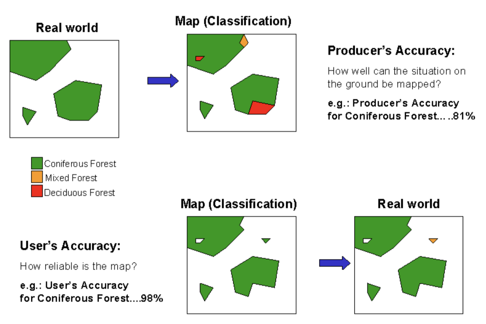

7 Classification II
7.1 Summary
This week’s lecture is a continuation of classification related concepts, it was condensed, but I’ll try to briefly summarize main ideas grouped into the following sections:
7.1.1 Advanced Analytical Techniques
Related content is explained in detail in the upcoming application section, where it makes sense to present it alongside practical examples. I opted not to explain it here to avoid redundancy.
7.1.2 Evaluation and Performance Metrics
In machine learning, accuracy assessment is essential for validating model outputs. For remote sensing applications, this typically focuses on Producer Accuracy (PA) and User Accuracy (UA), as shown in Figure 1. These metrics are complemented by Overall Accuracy (OA), which aggregates correctly classified pixels across all categories. The F1 score provides a balanced measure between PA and UA, ranging from 0 (poor performance) to 1 (perfect balance). The Receiver Operating Characteristic curve (ROC) offers another perspective by plotting true versus false positive rates, with the Area Under the Curve (AUC) quantifying performance from 0.5 (random) to 1 (optimal).
While these metrics work well with balanced data, the lecture highlighted how imbalances are common. Additionally, the equal weighting of PA and UA in the F1 score may not suit all applications, like urban mapping, where false negatives—missing urban pixels—matter more than false positives. For ROC in the other hand, the binary focus may oversimplify multi-class classifications.

Figure 1 - Producer and User Accuracy (Source: Banko et al., 1998)
7.1.3 Testing Data Selection and Spatial Validation
To reinforce the accuracy metrics outlined in the previous section, different validation strategies can be used. The most straightforward approach—a simple train-test split—reserves a subset of the data for final evaluation. More rigorous methods, like k-fold cross-validation, cycle through multiple data partitions, training the model on all but one-fold and testing on the remaining one.
But spatial data has a unique issue: spatial autocorrelation, where nearby locations tend to be similar—which means traditional validation can dramatically overestimate performance (Tobler, 1970). Spatial cross-validation methods address this by enforcing geographic separation between training and test sets. However, lack of clear rules for how much spatial separation is enough introduces uncertainty. Current best practices recommend spatially blocked designs that maintain realistic independence while remaining computationally feasible (Roberts et al., 2017), though the choice ultimately depends on each project’s specific spatial structure and resource constraints
“Everything is related to everything else, but near things are more related than distant things”
— Tobler, 1970
7.2 Applications
1. Pixel-Based Classification: Limitations in Urban Landscapes
Pixel-based methods classify individual pixels based solely on their spectral signatures. While effective for large-scale studies like the global deforestation mapping by Hansen et al. (2013), which was discussed in the lecture, they face challenges in urban environments, including:
Spectral ambiguity between different urban materials
Prevalence of mixed pixels in high-resolution imagery
Inability to incorporate spatial relationships between features
These limitations highlight a deeper issue: pixel-based methods assume spectral data alone can tell the full story, ignoring the spatial relationships that define urban complexity. This raises doubts about their suitability for tasks with high level of details, where material diversity and small-scale layouts challenge spectral clarity. Could over-reliance on this method lead to oversimplified conclusions in rapidly changing cities?
2. Object-Based Classification: A Spatial-Spectral Solution
Object-based image analysis (OBIA) addresses these limitations through a hierarchical approach that:
Segments imagery into meaningful objects based on both spectral and spatial characteristics
Incorporates contextual information through shape, texture, and relational metrics
Utilizes multi-scale analysis to capture features at appropriate levels of detail
The efficacy of this approach was demonstrated by Myint et al. (2011), whose comparative analysis of land cover in Phoenix showed a significant accuracy improvement—90.4% for object-based classification versus 67.6% for pixel-based classification, as visually evidenced in their Figure 1 below. This finding underscores the effectiveness of incorporating spatial context in classification efforts. However, OBIA’s strength—its reliance on segmentation—also introduces vulnerabilities. Selecting the appropriate scale is subjective and risks inconsistency if poorly chosen. This subjectivity could undermine reliability in large-scale projects, where uniform standards are essential. Moreover, the added computational demand of OBIA prompt the question: does its accuracy justify the resource cost, particularly in settings with limited resources where simpler methods might be sufficient?

3. Current Trends and Future Directions
Recent studies suggest that hybrid approaches, such as using OBIA for segmentation followed by Random Forest classification, can enhance classification outcomes (Ma et al., 2017). This integration of methodologies represents a promising direction, combining the strengths of both pixel-based and object-based approaches to improve accuracy and reliability.
Additionally, emerging trends, including deep learning Convolutional Neural Networks (CNNs), further complicate these paradigms by automating spatial feature extraction. This advancement enables pixel-object fusion for applications such as slum mapping and wetland delineation (Zhang et al., 2019). The potential of these technologies to revolutionize remote sensing analysis is significant, suggesting a future where classification methods are more adaptive and sophisticated.
This methodological evolution has established object-based approaches as the standard for urban remote sensing applications. However, the choice between pixel-based and object-based methods ultimately depends on specific research objectives, the scale of analysis, and available computational resources.
7.3 Reflections
The tension between methodological rigor and practical implementation proves especially significant in emerging fields like climate resilience planning. While spatially blocked cross-validation effectively addresses spatial autocorrelation (Roberts et al., 2017), its static geographic partitions may not adequately capture dynamic systems where spatial relationships evolve over time.
This limitation highlights a broader conceptual shift in geospatial analysis—from purely statistical validation toward impact-aware evaluation frameworks. The prioritization of specific error types (e.g., false negatives in urban mapping) extends beyond technical considerations to reflect fundamental value judgments about risk assessment. For example: • Environmental justice applications may require differential weighting of errors, where underestimating pollution exposure (false negatives) carries greater consequences than misclassifying green spaces • Disaster response systems could employ adaptive significance metrics, with error costs scaling dynamically based on event likelihood
These observations resonate particularly with my planned dissertation work on detection methodologies. The choice between pixel-based and object-based approaches—a fundamental analytical decision—directly influences detectable patterns and outcomes. This realization underscores the need for deeper investigation into how methodological selections shape research findings across different applications
7.4 References
Banko, Gebhard. (1998). A Review of Assessing the Accuracy of Classifications of Remotely Sensed Data and of Methods Including Remote Sensing Data in Forest Inventory.
Brenning, A. (2012). Spatial cross-validation and bootstrap for the assessment of prediction rules in remote sensing: The R package sperrorest. 2012 IEEE International Geoscience and Remote Sensing Symposium, 5372–5375. https://doi.org/10.1109/IGARSS.2012.6352393
Ma, L., Li, M., Ma, X., Cheng, L., Du, P., & Liu, Y. (2017). A review of supervised object-based land-cover image classification. ISPRS Journal of Photogrammetry and Remote Sensing, 130, 277–293. https://doi.org/10.1016/j.isprsjprs.2017.06.001
Myint, S. W., Gober, P., Brazel, A., Grossman-Clarke, S., & Weng, Q. (2011). Per-pixel vs. object-based classification of urban land cover extraction using high spatial resolution imagery. Remote Sensing of Environment, 115(5), 1145–1161. https://doi.org/10.1016/j.rse.2010.12.017
Roberts, D. R., Bahn, V., Ciuti, S., Boyce, M. S., Elith, J., Guillera‐Arroita, G., Hauenstein, S., Lahoz‐Monfort, J. J., Schröder, B., Thuiller, W., Warton, D. I., Wintle, B. A., Hartig, F., & Dormann, C. F. (2017). Cross-validation strategies for data with temporal, spatial, hierarchical, or phylogenetic structure. Ecography (Copenhagen), 40(8), 913–929. https://doi.org/10.1111/ecog.02881
Tobler, W. R. (1970). A Computer Movie Simulating Urban Growth in the Detroit Region. Economic Geography, 46, 234–240. https://doi.org/10.2307/143141
Zhang, C., Sargent, I., Pan, X., Li, H., Gardiner, A., Hare, J., & Atkinson, P. M. (2019). Joint Deep Learning for land cover and land use classification. Remote Sensing of Environment, 221, 173–187. https://doi.org/10.1016/j.rse.2018.11.014